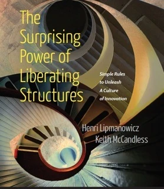

Liberating Structures facilitation — 33 ways to run a meeting where everyone actually speaks
In a conventional meeting, three people talk and fifteen wait for it to end. Liberating Structures replaces that pattern with simple structures where every person contributes from the first minute. Not because you asked them nicely. Because the format makes it impossible not to.

What are Liberating Structures?
Liberating Structures are 33 microstructures for group work. Each one is a set of simple rules that changes who speaks, when, and for how long. You can learn the simplest ones — like 1-2-4-All — in five minutes and use them in your next meeting. The more complex ones take practice. All of them produce more participation than an open discussion ever will.
They were developed by Henri Lipmanowicz and Keith McCandless. The Belgian community maintains resources at liberatingstructures.be.
What changes when you use Liberating Structures
- Presentation followed by Q&A → Everyone contributes from minute one
- The loudest person sets the direction → Structured input from every role
- Open discussion → Timed, focused conversation with clear output
- Manager decides, team nods → Collaborative sense-making with real buy-in
- Passive listening → Active engagement with a clear task
When Liberating Structures are not the right tool
- When the decision has already been made and participation would be theatre
- When the group is smaller than 4 — a direct conversation works better
- When you need a single technical expert to solve a problem, not a group
- When there is no time to debrief — without reflection, insights evaporate
We tell you this before you book. If your situation doesn't fit, we'll say so and suggest what does.
How we work with Liberating Structures
We don't pick structures from a menu and hope for the best. We design a sequence. Each structure in the session builds on the one before it. The invitation — the precise question we give the group — is what determines whether you get real thinking or polite noise.
- We talk to key people before the session to understand what's really going on
- We design a sequence of structures specific to your challenge and group
- We write invitations that get honest answers, not safe ones
- We facilitate the session and document decisions before we leave
- We teach you the structures so your team can use them without us
Liberating Structures in practice
EU agency: two-day immersion for experienced facilitators
An EU agency sent 20 of their experienced facilitators to a two-day Liberating Structures immersion workshop. These were practitioners who already knew how to run meetings — they came to go deeper. By the end of day two, they were rethinking how they ran every session.
"I walked in sceptical and left a convinced fan. Watching a room full of colleagues collaborate meaningfully within minutes — that was a genuine revelation."
— Sophie B., Change Manager
Cross-functional team: from 30% delivery to on-time
Siloed departments used Conversation Café and Wise Crowds to build mutual understanding. New collaborative processes reduced project delivery time by 30%.
Strategic alignment: decision in one day
A global team struggling with misaligned priorities used 1-2-4-All, Min Specs, and Ecocycle Planning. The result: a shared strategic direction that had seemed impossible to agree on before the session.
Ready to try it?
Start small. One structure in your next meeting. Or bring us in for a session designed around your specific challenge.
Want to learn the structures yourself? See our training options.
More from the Belgian community: liberatingstructures.be
